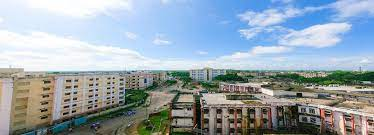

The Agartala Government Medical College is situated in the G B Pant Hospital campus in a newly constructed building. It is fully equipped with laboratories, Dissection Theatres, Lectures theatres, Lecture Theatres, Central Library, Common Room, Cafeteria, Intercom Facilities, Central Workshop, Mechanized Laundry etc. This Institute is recognized & approved by Medical Council of India, Minister of Health & Family Welfare, New Delhi and affiliated to Tripura University(A Central University).
THE AIMS AND OBJECTIVE OF THE INSTITUTE:
a) To provide best Health Care facilities to the people of North-Eastern Region.
b) To have a state of the art Medical College fully equipped in all respect.
c) To be a leader in Medical Education.
d) To be a Premier Medical institution through outstanding ,patient care and academics.
e) To inculcate value based education that is socially and professionally acceptable.
f) To develop Human Resources in all fields related to health.
AGARTALA GOVERNMENT MEDICAL COLLEGE (A.G.M.C.)
Agartala Government Medical College (AGMC) was established in 2005 with the permission Ministry of Health & Family Welfare, Government of India on the recommendation of Medical Council of India (MCI) and affiliation of Tripura University for 100 annual admission capacity of MBBS students. Sri Manik Sarkar, Hon’ble Chief Minister, Tripura has inaugurated the AGMC on 1st August 2005 in presence of Sri Tapan Chakraborty, Hon’ble Health Minister, Tripura and other dignitaries. Dr. Monmohan Singh, Hon’ble Prime Minister of India has laid the Foundation Stone of the Medical College Building on 29th October 2005 in presence of Sri Dinesh Nandan Sahay, His Excellency Governor of Tripua, Sri Manik Sarkar, Hon’ble Chief Minister, Tripura and Sri Tapan Chakraborty, Hon’ble Health Minister, Tripura. Out of 100 seats, 15 seats are for the Central nominee students and 10 seats have been offered to 04 North Eastern States namely Mizoram, Nagaland, Meghalaya and Arunachal Pradesh where there are no Medical Colleges for MBBS students as a gesture of good will of regional co-operation. The College has been recognized by the MCI for undergraduate course in 2010. It is now churning out Basic Medical Doctors and would soon contribute to the specialist pool of the State Health Service. Sooner or later, students of this institute would fulfill the needs of health care services of the State and fulfill the dreams of the people and cater to their health needs. Undergraduate:
A total of 356 students of this College have so far been graduated as Doctors. Out of them 333 Doctors are from Tripura and many of them have joined in Tripura Health Services and are serving the people of the State in rural areas. A few of them have joined the Defense Services to serve the motherland. Thus, the primary objective of establishing a Medical College to produce basic and Specialist Doctors to serve the people living in rural and hilly areas, is being fulfilled. Post Graduate: Post Graduate course in 10 disciplines viz. (1) Radiodiagnosis (2) Paediatrics (3) Obst. & Gyanecology (4) Anaesthesiology (5)Community Medicine (6) Surgery (7)Forensic Medicine & Toxicology (8) Microbiology (9) ENT (10) Psychiatry started from the academic year 2011-12 and in 03 discipline viz. (1) Medicine, (2) Orthopaedics and (3) Ophthalmology in 2012-13 with the permission of MCI and Affiliation by Tripura University. Up to the academic session 2013-14 total 66 students have been admitted in the PG courses in AGMC of which 47 students belong to this State. The first batch of PG students has already appeared in the Final Theory Examination in 10 disciplines in April 2014. After passing out of the first batch of PG students the scarcity of Specialist Doctors in the State will be mitigated gradually in course of time. Some of them would also join in the Medical Colleges which will pave the way of self reliance. Research Activities: Faculty and students of AGMC in addition to the service and academic activities are also involved in different research projects funded by national agencies like Indian Council of Medical Research (ICMR), Department of Bio Technology (DBT), Ministry of Science & Technology, Govt. of India etc. Body and Organ Donation: The requirement of Cadaver (Dead Body) is essential for learning of the Medical students. Tripura is an exceptional State where there was no dearth of availability of cadaver for the Medical students from the inception of the Medical College. This is due to the generosity of the relatives who have permitted the institute to use their near and dear ones for academic purposes. Till March 2014 AGMC has received 36 (thirty six) bodies after death, which have been of immense value in teaching the students. Moreover, 994 persons have already submitted their willingness to donate their bodies to AGMC after death. A Seminar was organized to sensitize the Students, Faculty and Non-Teaching staff of AGMC & GBP Hospital for voluntary donation of different body organs. Social Work :